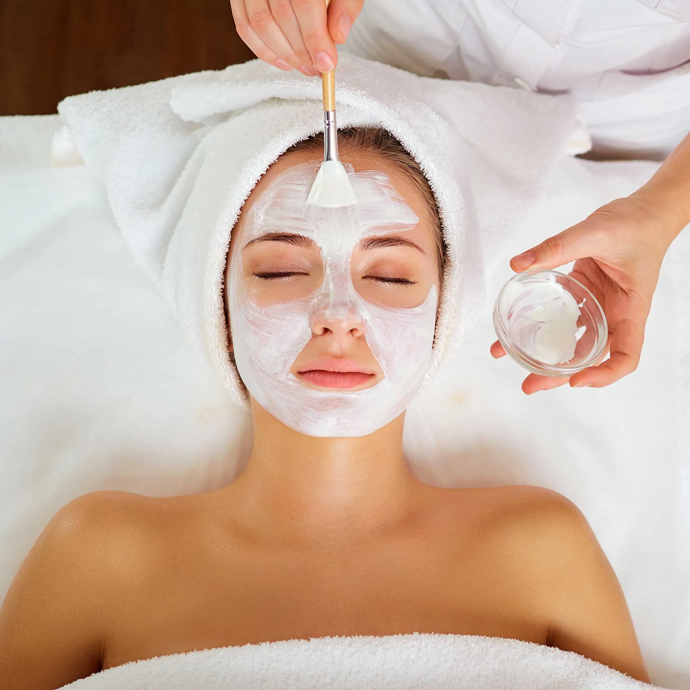

Hair Salon
Welcome to Harriet Hair salon, where we treat all types of hair lovingly. Estabilished in 1995, Harriet's hair salon started out as a family business, but now we have several branches in this city. Customers can simply walk in or arrange an appointment in advance. Keep in mind that walk-in services are served on a first come, firt served basis. Our main services are hair styling, coloring, haircuts, and hair treatment. Our Employees can take care of hair of all types. Other services include skin care, nail treatment, massages, waxing and laser hair removals, and tanning.

Services
Hair Styling
Men's haircuts, Women's haircuts, Children's haircuts, Shampoo and Conditioner, Hair bang trim,Hair washing, Hair styling, Hair extensions, Wigs, Hair extension washing and blow dry, Wig washing and blow dry, Treatment by curl pattern - Straight hair, Wavy hair, Curly hair, Coily hair, Hair and scalp treatment, Treatment of damaged hair
Hair treatment
Want to give your hair a new color or look? Complete hair dye, Hair bleaching, Multicolor
hair dye, Highlights, Lowlights, Hair updos and special occasions, bridal style. We also
give different types of hair perms, such as: hair straightening, wavy perms, and curly perms.
Additional perms include spiral perm, pin curl perm, braid perm, stack perm, root perm, and more.

Nail spa
Need your nails done? We will make your nails look nice and pretty. You can give your nails a new look by having a manicure, pedicure, or both. Or even better, you can pay for nail maintenance to give your nails a healthy look. Do you also want your nails painted, have nail art done, or get nail extensions and acrylic nails? We can massage and moisturize your hands and feet.
Other Services you can check out
Facials
This is where we offer exquisite skincare with high-quality products. Facial skin is exfoliated and cleansed, giving customers a healthier and glowing complexion. We also help treat customers who have acne, pimples, dry skin, blackheads, and such. Facials usually last between 60-90 minutes, but with express facials, it lasts 30-45 minutes. 
Body massages and waxing
We will get rid of unwanted hair on various body parts. We will do full arms, half arms, full legs, half legs, toes, fingers, eyebrows, underarms, on the back, front, or both, facial. Included are brazilian and bikini. Body massages will improve circulation and relax the affected areas, thus boosting health.